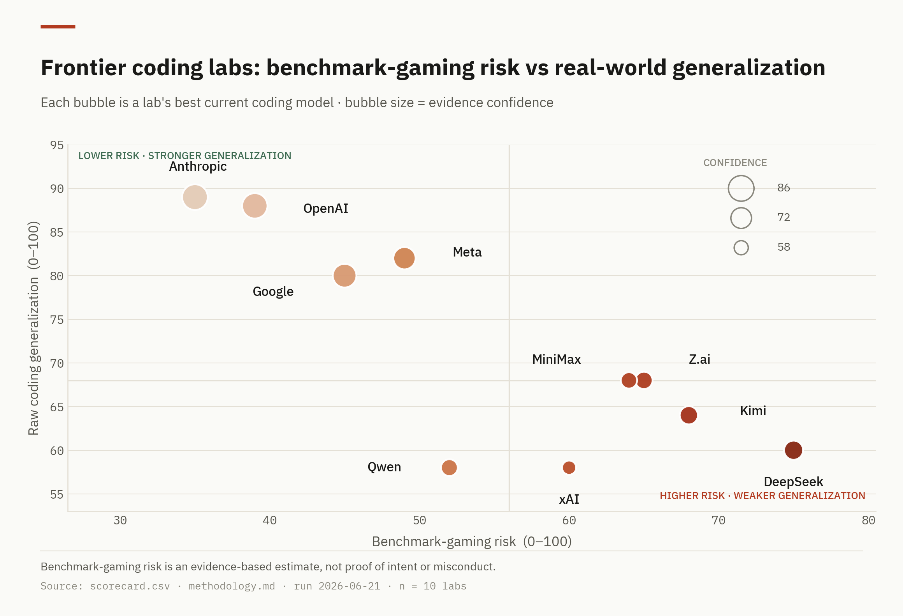
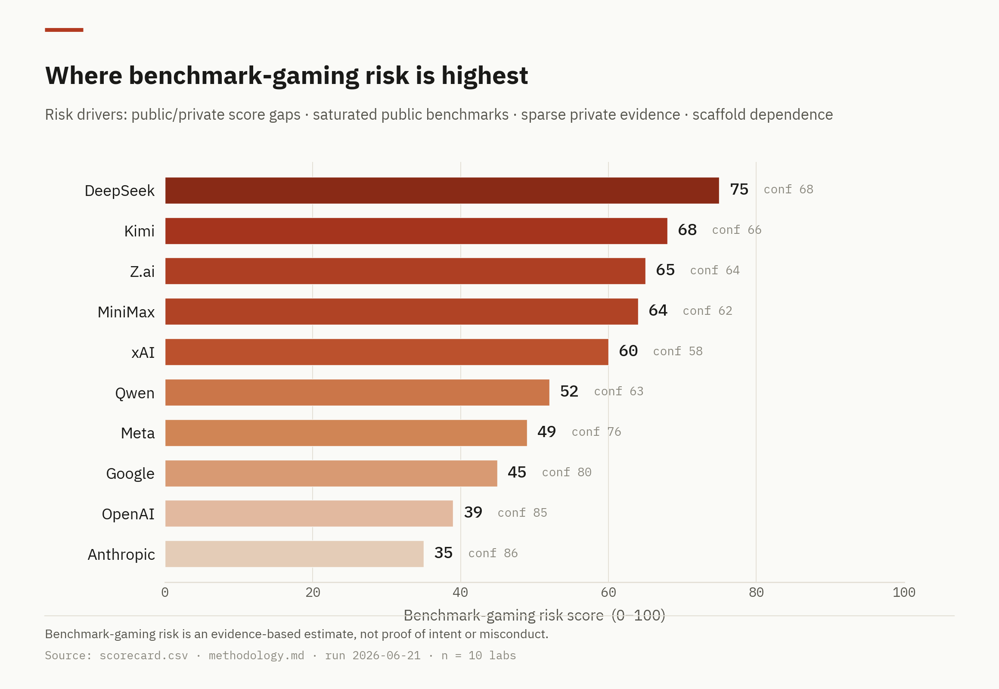
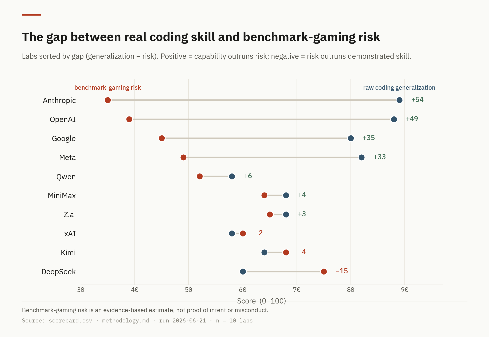

AI coding benchmarks: gaming risk vs real-world generalization
A three-chart read on frontier coding labs — how much each lab's public benchmark strength is backed by independent, private, and live evidence of real coding skill.
Read this first. Benchmark-gaming risk is an evidence-based estimate built from public/private score gaps, contamination exposure, scaffold dependence, and disclosure uncertainty. A high score means the public picture is harder to corroborate — it is not proof of intent or misconduct.

The map. Anthropic and OpenAI sit in the low-risk, high-generalization corner. DeepSeek and Kimi carry the highest risk relative to demonstrated skill.
{kind=link}
{kind=link}

The ranking. DeepSeek (75), Kimi (68) and Z.ai (65) lead on gaming risk; Anthropic (35) and OpenAI (39) are lowest. Confidence in each rating is noted alongside.
{kind=link}
{kind=link}

The gap. Anthropic (+54) and OpenAI (+49) show capability far outrunning risk. DeepSeek (−15), Kimi (−4) and xAI (−2) are the only labs where risk outruns demonstrated skill.
{kind=link}
{kind=link}
Data & methodology
- Full report — narrative findings and per-lab judgments
- scorecard.csv — scored lab/model data behind every chart
- methodology.md — scoring rubric and normalization rules
- sources.md — source index (leaderboards, papers, harnesses)